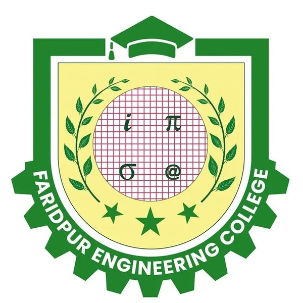

Civil engineering student and maker
Md. Shaikh Alam
I build small, useful tools for study, printing and engineering workflows. My main focus is CTRL-P, academic document utilities, Blender modeling and cleaner web interfaces.
Featured Work
The tools and portfolio sections I am building and maintaining right now.
CTRL-P Service
A direct print-order interface for documents, academic sheets and engineering materials. The main service — fast to use from phone or desktop.
Civil Engineering Tools
Cover page maker, lab report index generator, MCQ builder and semester resources — all grouped in one place.
3D Modeling
Blender practice, rigging, animation and visual project experiments for learning and creative work.
What I am working on
Useful tools first, portfolio second.
I like making practical things: a print service that saves time, civil engineering templates that reduce repetitive formatting, and clean web pages that are easy to use from phone or desktop.
- CTRL-P — print service built for FEC students and local use.
- Academic document tools that output submission-ready PDFs fast.
- Blender 3D modeling for learning and visual project work.

Engineering background
The academic tools are built around the format and needs of Faridpur Engineering College students — especially civil engineering reports, indexes and printable documents.
Contact
For print orders, project feedback or collaboration — these are the fastest ways to reach me.